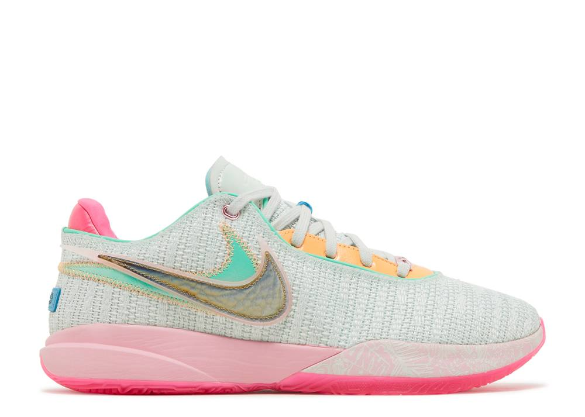
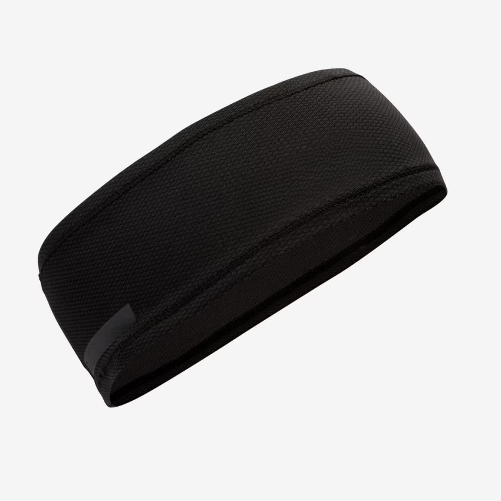

<html><title>Page3.html</title></html>
<h1><font face="Arial" color="black"></font>
<body background=bgball2.jpg text="white">
<table border="0" size="0" color="Black">
<tr>
<td></td>
<td></td>
<td></td>
<tr>
<td><h1><font color="white" size="5">A basketball is a spherical ball used in basketball games. Basketballs usually range in size from very small promotional items that are only a few inches (some centimeters) in diameter to extra large balls nearly 2 feet (60 cm) in diameter used in training exercises.</font></h5></td>
<td><h1><font color="white" size="5">Similar to athletic shorts, a basketball jersey helps you move with ease without restrictions on your upper body and arms. Wearing a loose-fitting fabric, you can pass, jump and run without feeling uncomfortable.</font></h5></td>
<td><h1><font color="white" size="5">The must-have basketball gear is the basketball shoe. It is vital to help you perform every task within the game, whether you are sprinting, jumping or pivoting on the court.</font></h5></td>
<br>
<table border="0" size="0" color="Black">
  <tr>
<td></td>
<td></td>
<td></td>
<tr>  
<td><h1><font color="white" size="5">a bag used by an individual to carry his or her clothing and equipment for taking part in sport
Both men were carrying black sports bags and spoke with local accents.</font></h5></td>
<td><h1><font color="white" size="5">are ideal to keep sweat from your eyes, which can cause a burning and stinging sensation during intense games. Running back and forth, shooting and cutting past your opponent leaves little time to worry about the sweat dripping down your face.</font></h5></td>
<td><h1><font color="white" size="5">Athletic taping is the process of applying tape directly to the skin or over pre-wrap in order to maintain a stable position of bones and muscles during athletic activity.</font></h5></td>
<br>
<table border="0" size="0" color="black">
<tr>
<td></td>
<td></td>
<td></td>
<tr> 
<td><h1><font color="white" size="5">An ankle brace is a garment that is worn around the ankle to protect it or for immobilization while allowing it to heal from sprains and other minor injuries.</font></h5></td>
<td><h1><font color="white" size="5">The Grip Powder is an adhesive powder that helps keep your hands dry and improve grip.
Use for weight lifting, cross fit, tennis, squash, gymnastics and any other activity where you need an improved grip.</font></h5></td>
<td><h1><font color="white" size="5">Compression garments have become a popular item for athletes and recreational gym users, whether for their comfort, aesthetic appeal, or for their psycho-physiological function appears to be irrelevant. What is important, primarily for athletes, is their ability to promote recovery and thus improve subsequent performance.</font></h5></td>
  <td>
  <tr></table>
  <h5></h5>    
    <td><a href="page2.html">
      <td><a href="page4.html">
        <td><a href="index.htm">
        